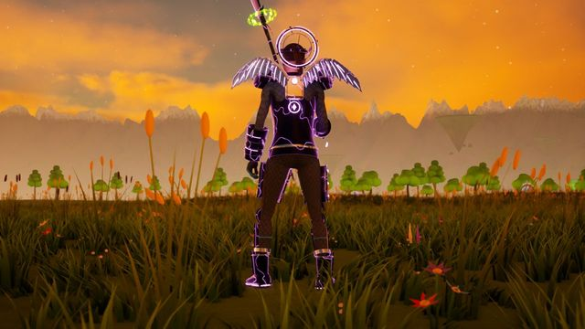
Yakın dövüş DPS
Speeder
Elektrik hızında bir suikastçı. Alan saldırılarıyla mob kamplarına dalar.
Yıldız Yolu seti +9 · Yarık Biçen (mitik teber) · Seraf Kanatları (mitik)
Kronit Çağı · Online Aksiyon RPG
Tamamı oyun içi görüntülerden hazırlanan tanıtım fragmanı: açık dünya ve farklı bölgeler, kahramanlar, büyüler, ordulara karşı savaşlar ve bir boss savaşı: Morvax, Entropi Tiranı.
Hikâye
Xalasco bir Orta Çağ masalı değil. Burada zaman kristalleşir ve Kronit'e dönüşür. Adalar havada süzülür, gökte halkalı gaz devi Vael doğar.
Bin yıl boyunca Saatçiler Tarikatı, dünyanın kalbindeki Kalp Saati'ni korudu. Sonra Kırılma gecesi geldi: kadran çatladı ve çatlaktan renkleri, anıları ve isimleri silen gri bir sis sızdı. Adı Entropi'ydi.
Saat susmadan önce son bir kez attı ve zamanın ipliklerinden savaşçılar ördü: Yankılar.
Sen onlardan birisin.
Sınıflar
Üç sınıf oynanabilir durumda ve aralarında Rezonans sinerjisi var; dördüncüsü Cryon test aşamasında.

Yakın dövüş DPS
Elektrik hızında bir suikastçı. Alan saldırılarıyla mob kamplarına dalar.
Yıldız Yolu seti +9 · Yarık Biçen (mitik teber) · Seraf Kanatları (mitik)
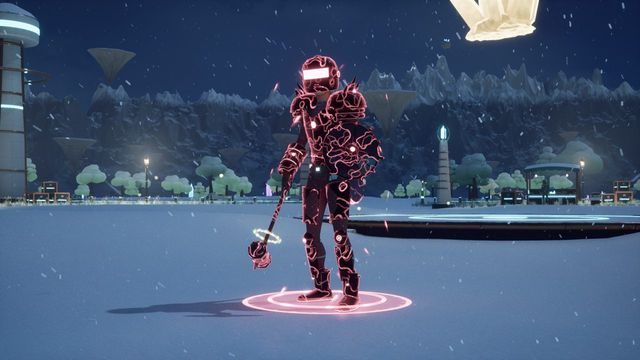
Tank
Dev bir tank. Ağır zırhı ve çekiciyle hücumu göğüsler, takımının önünde durur.
Hiçlik Dövmesi seti +15 · Entropinin Çekici (mitik) · Kızıl Kule Omuzlukları · Gece Yolcusu Pelerini
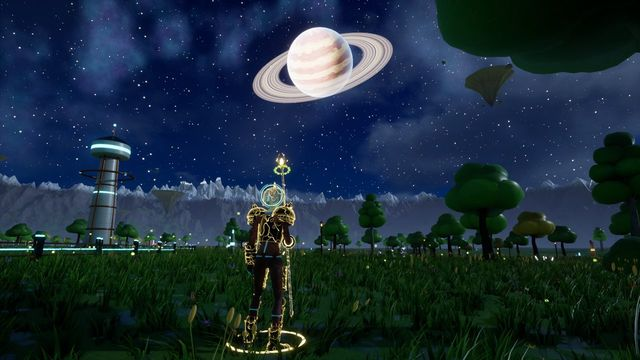
Destek / kontrol
Zaman büyücüsü. Savaşın akışını kontrol eder, takımına destek olur.
Güneş Nişanı seti +12 · Son Şafak (mitik asa) · Şafak Tacı
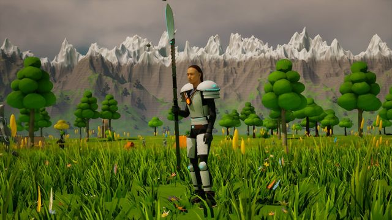
Kontrol tankı · yeni sınıf
Isıyı düşmandan çalıp dosta taşıyan bir buzul kalkanı. Mana yerine Termal Rezerv kullanır; düşmanlar soğudukça Serin, Buzlu ve sonunda Donmuş olur (bosslar donmaz, Kırılgan olur). Ultisi: Ayaz Halkası.
Termal Teber · göğüste Isı Kalbi · sırtta soğutma tüpü
Zırhtaki ışıltı, + basma seviyesini gösterir: +9 mor kıvılcım, +12 altın iz, +15 kızıl nabız.
Dünya
Mevsimleri değişen, gecesi gündüzünü kovalayan, fırtınası ve şimşeği olan bir dünya. Kronit Kapıları arasında ışınlan, hover-kızak bineğinle süzül, mob kamplarından ganimet topla.
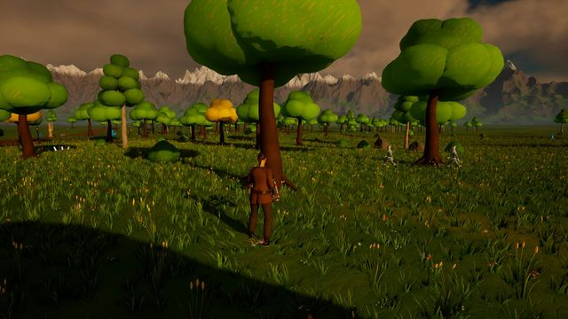
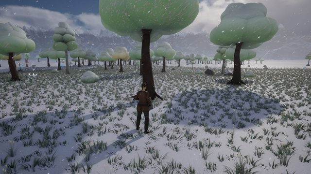
Galeri
Tüm görüntüler oyunun içinden. Büyütmek için bir görsele tıklayın ya da dokunun.
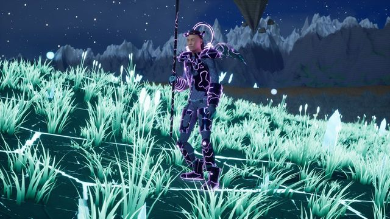
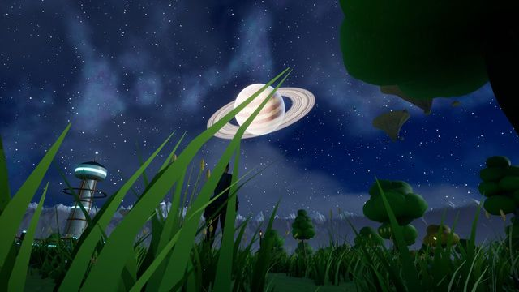
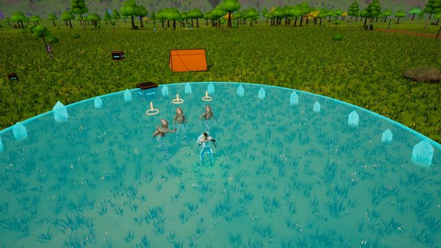
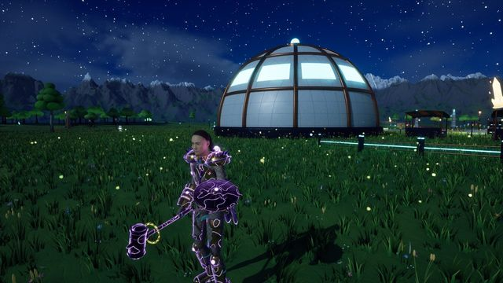
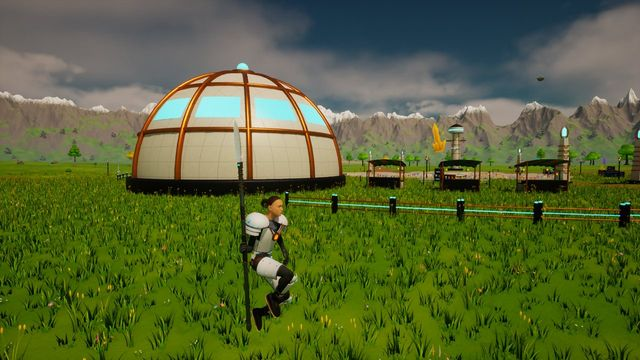
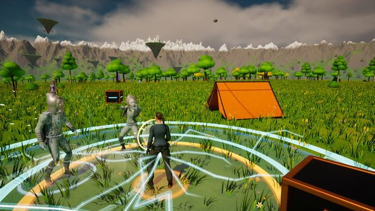
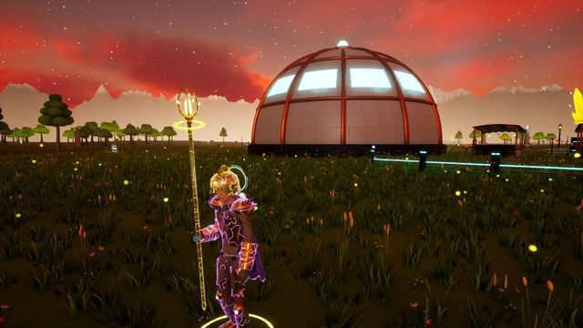
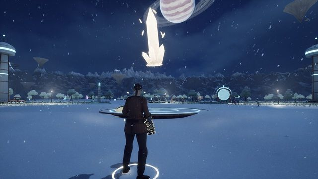
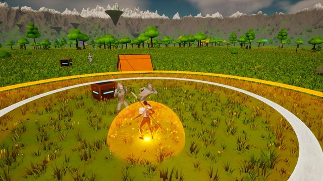
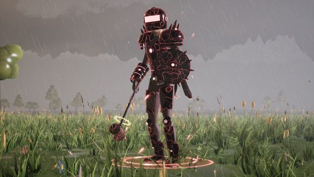
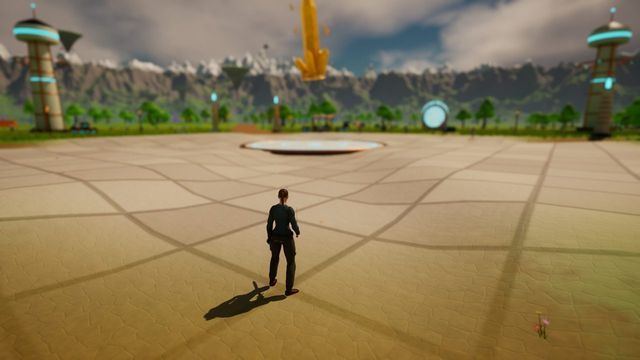
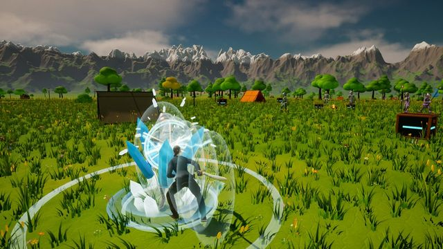
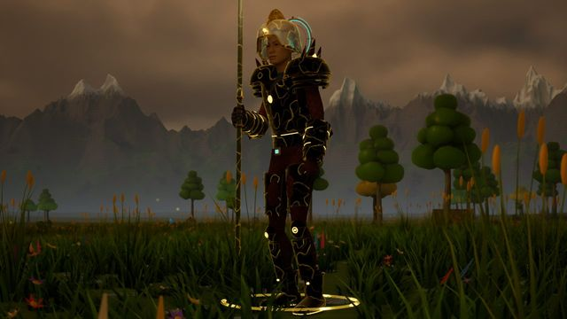
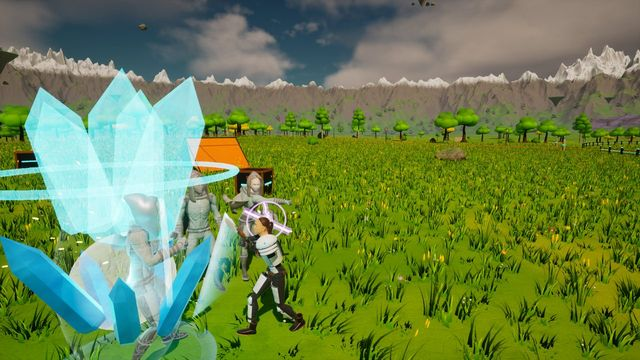
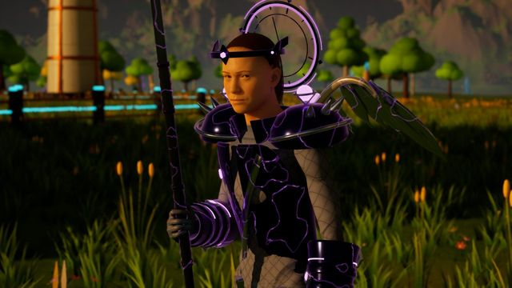
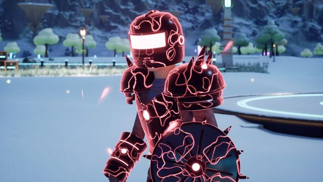
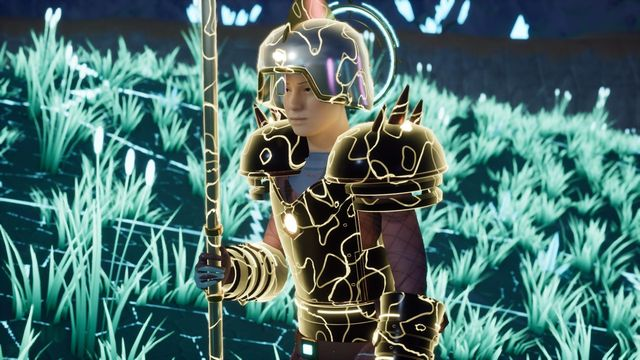
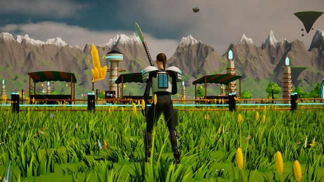
Yol haritası
Xalasco aktif olarak geliştiriliyor. Tarih verilmiyor; sıra ve kapsam çalışmalar sürdükçe değişebilir.
19 Kasım 2026 · son gelişme · test aşamasında
Planlanan
Ayrıntılar: Yol haritası · Gelişim günlüğü